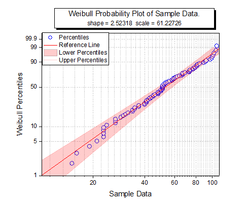
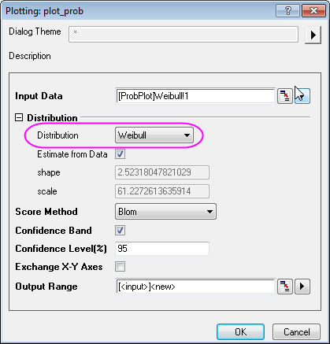
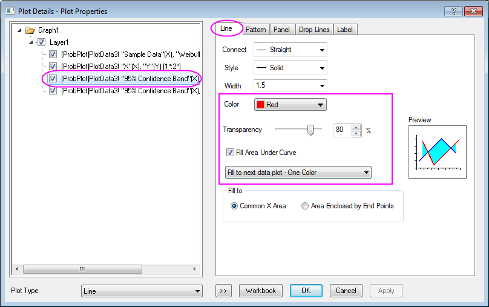
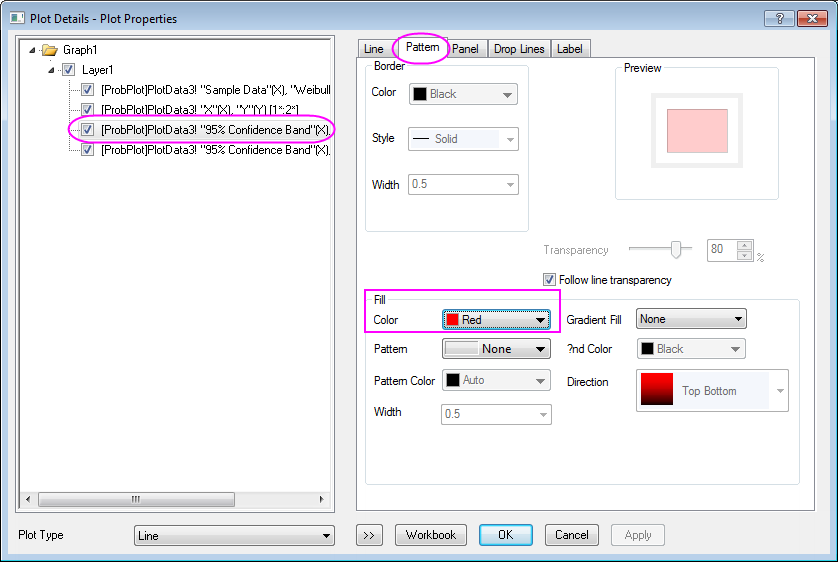
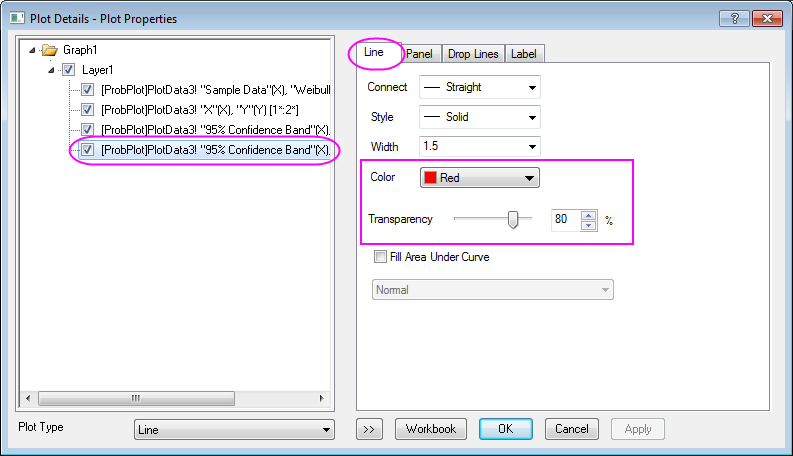
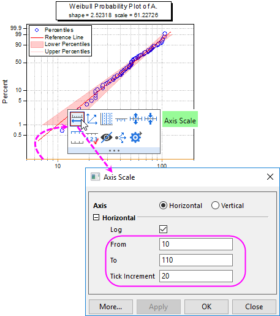
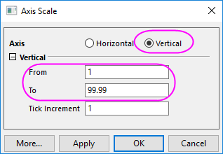

Weibull-Wahrscheinlichkeitsdiagramm
Weibull-Probability-Plot
Zusammenfassung
Das Wahrscheinlichkeitsdiagramm zeigt ein Diagramm mit beobachtetem kumulativen Prozentanteil auf der X-Achse und erwartetem kumulativen Prozentanteil auf der Y-Achse. Das Weibull-Wahrscheinlichkeitsdiagramm wird verwendet, um zu testen, ob ein Datensatz einer Weibull-Verteilung folgt. Sein X- und Y-Skalierungstyp ist Log10 bzw. Log-Reziprok doppelt. Wenn alle Punkte nah an der Referenzlinie liegen, kann davon gesprochen werden, dass der Datensatz der Weibull-Verteilung folgt.
- 
Was Sie lernen werden
- Ein Weibull-Wahrscheinlichkeitsdiagramm erstellen
- Die Füllfläche zwischen den Perzentillinien hinzufügen
Schritte
Sie können dieses Diagramm auch im Lernzentrum finden. (Wählen Sie Hilfe: Lernzentrum im Menü oder drücken Sie die Taste F11. Öffnen Sie dann Diagrammbeispiel: Statistikdiagramme und suchen Sie nach "weibull".)
- Laden Sie die Daten hier herunter. Ziehen Sie die heruntergeladene .txt-Datei per Drag&Drop in das aktive Arbeitsblatt. Markieren Sie Spalte A und klicken Sie mit der rechten Maustaste auf sie, um Setzen als: Y im Kontextmenü auszuwählen.
- Markieren Sie diese Spalte und wählen Sie Zeichnen: Statistisch: Wahrscheinlichkeitsdiagramm im Origin-Hauptmenü, um den Dialog plot_prob zu öffnen. Ändern Sie auf diesem Dialog die Verteilung in Weibull und klicken Sie dann auf die Schaltfläche OK, um mit Spalte A ein Weibull-Wahrscheinlichkeitsdiagramm zu erstellen.
 - Klicken Sie zum Öffnen des Dialogs Details Zeichnung doppelt auf die untere Perzentillinie. Gehen Sie zur Registerkarte Linie, setzen Sie die Farbe auf Rot und die Transparenz auf 80%. Aktivieren Sie dann das Kontrollkästchen Fläche unter Kurve füllen und wählen Sie Bis zur nächsten Datenzeichnung füllen - Eine Farbe in der Auswahlliste unten.
 - Gehen Sie zur Registerkarte Muster und setzen Sie die Füllfarbe auf Rot. Stellen Sie sicher, dass das Kontrollkästchen Linientransparenz folgen aktiviert ist.
 - Gehen Sie zur Registerkarte Linie der oberen Perzentillinie und setzen Sie die Farbe auf Rot und die Transparenz auf 80%. Klicken Sie auf OK, um die Einstellung anzuwenden, und schließen Sie den Dialog.
 - Klicken Sie auf die X-Achse im Diagramm und klicken Sie auf der Minisymbolleiste auf die Schaltfläche Achsenskalierung
 , um den Dialog Achsenskalierung zu öffnen und die Skalierung von 10 auf 100 zu setzen. Legen Sie für das Hilfsstrichsinkrement den Wert 20 fest.
, um den Dialog Achsenskalierung zu öffnen und die Skalierung von 10 auf 100 zu setzen. Legen Sie für das Hilfsstrichsinkrement den Wert 20 fest.
 - Wechseln Sie im Dialog Achsenskalierung zur Vertikalen Achse und ändern Sie die Skalierung auf von 1 bis 99,99. Klicken Sie auf OK, um die Einstellung anzuwenden, und schließen Sie den Dialog.

Das Diagramm sollte am Ende folgendermaßen aussehen: